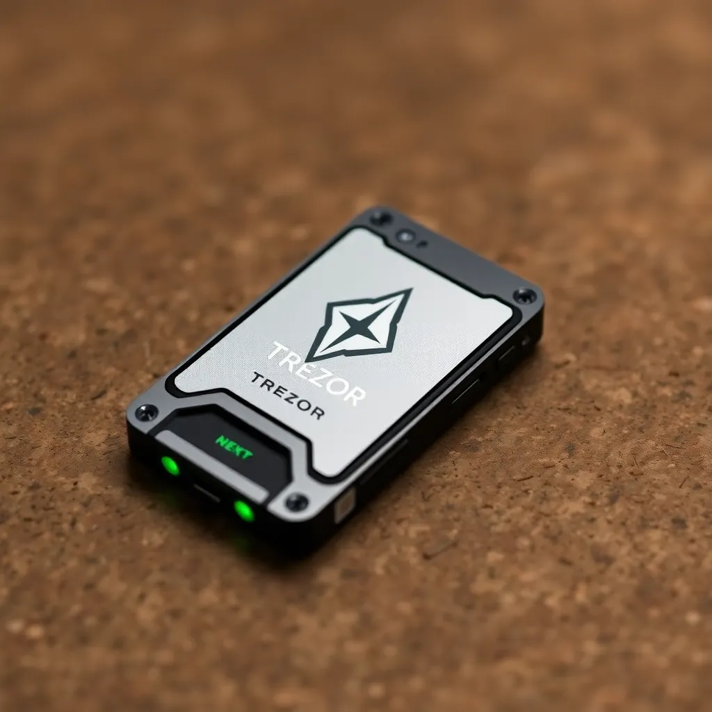
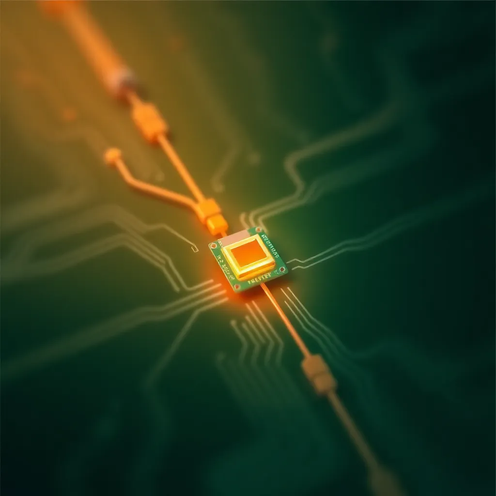
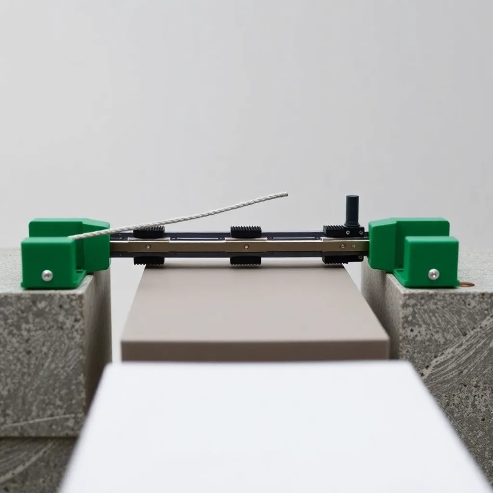
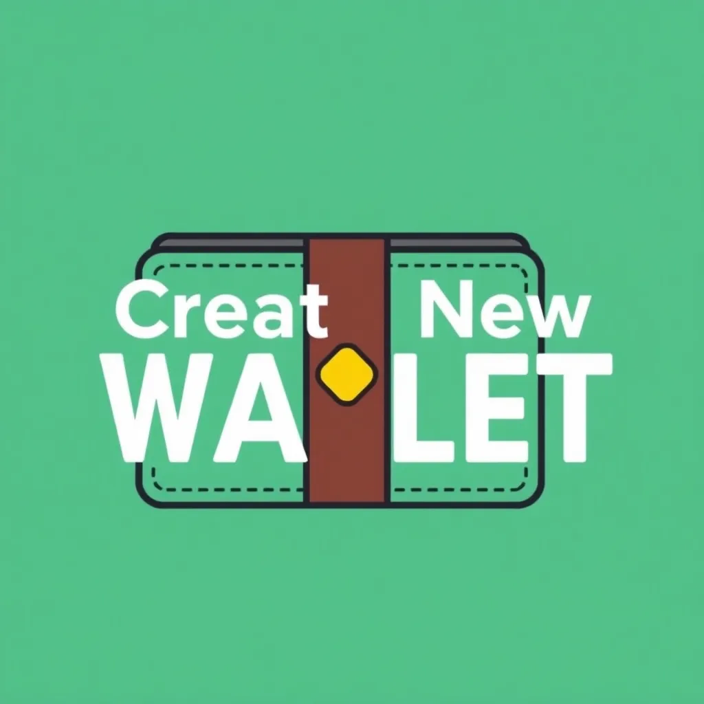
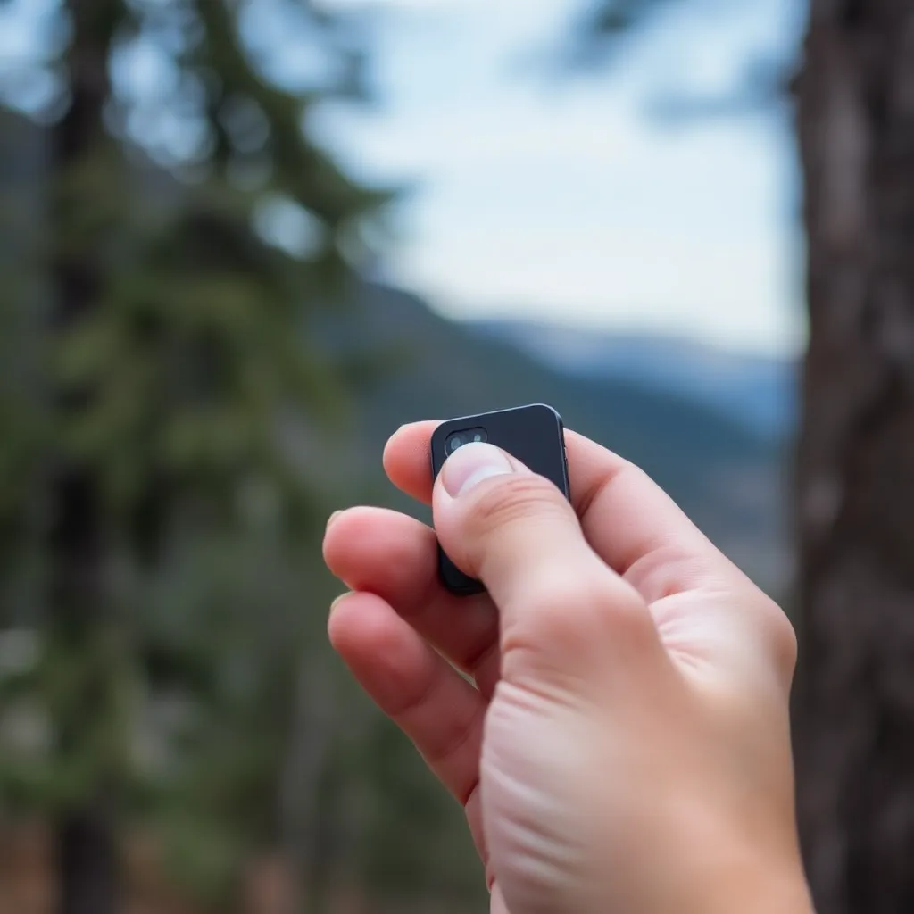

Introduction
In this guide, we will walk you through the steps to set up your Trezor hardware wallet. A hardware wallet is a physical device that securely stores your cryptocurrency private keys offline, providing an extra layer of security against online threats.
By the end of this guide, you will have your Trezor hardware wallet set up and ready to use. Let's get started!
What is a Trezor Hardware Wallet?
A Trezor hardware wallet is a device that securely stores your cryptocurrency private keys offline. It is designed to protect your digital assets from online threats such as hacking and malware. The Trezor wallet is easy to use and supports a wide range of cryptocurrencies.
The Trezor hardware wallet comes with a user-friendly interface and a range of security features, including a PIN code, passphrase protection, and two-factor authentication. It is compatible with various operating systems and can be used with popular cryptocurrency wallets and exchanges.
Getting Started with Your Trezor Hardware Wallet
To get started with your Trezor hardware wallet, follow these steps:
- Unbox your Trezor hardware wallet and connect it to your computer using the provided USB cable.
- Visit the Trezor website and download the Trezor Bridge software.
- Install the Trezor Bridge software on your computer and follow the on-screen instructions to set up your device.
- Create a new wallet or recover an existing wallet using your recovery seed.
- Set up a PIN code and passphrase for added security.
Step 1: Unbox Your Trezor
When you receive your Trezor hardware wallet, unbox it and ensure that all the components are included. You should have the following items:
- Trezor hardware wallet
- USB cable
- Recovery seed card
- User manual
Step 2: Connect Your Trezor
Connect your Trezor hardware wallet to your computer using the provided USB cable. Once connected, visit the Trezor website and download the Trezor Bridge software.
Step 3: Install Trezor Bridge
Install the Trezor Bridge software on your computer. This software allows your Trezor hardware wallet to communicate with your computer and the Trezor web interface.
Step 4: Create a New Wallet
Once the Trezor Bridge software is installed, open the Trezor web interface and follow the on-screen instructions to create a new wallet. You will be prompted to set up a PIN code and passphrase for added security.
Step 5: Backup Your Recovery Seed
During the setup process, you will be provided with a recovery seed. This is a series of words that can be used to recover your wallet in case your Trezor hardware wallet is lost or damaged. Write down the recovery seed and store it in a safe place.
Step 6: Start Using Your Trezor
Once your Trezor hardware wallet is set up, you can start using it to securely store and manage your cryptocurrency. You can use the Trezor web interface to send and receive cryptocurrency, check your balance, and manage your accounts.
